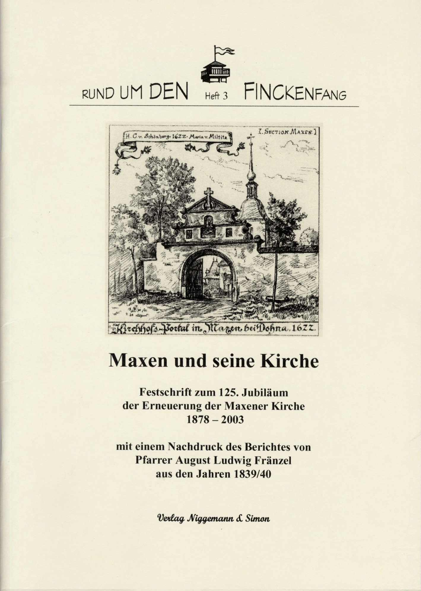
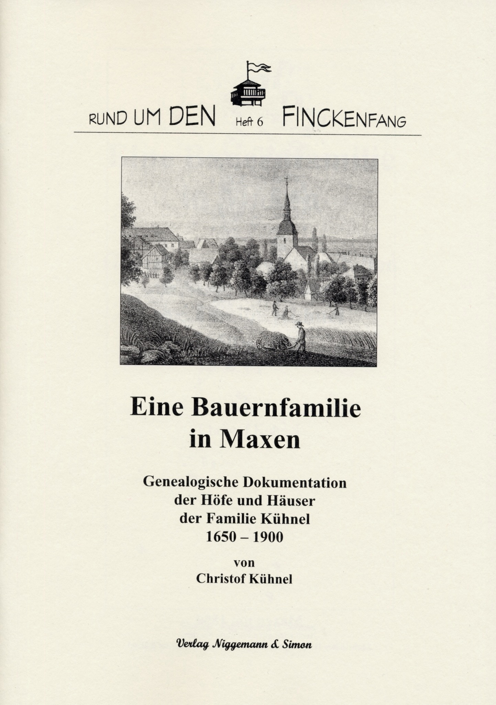
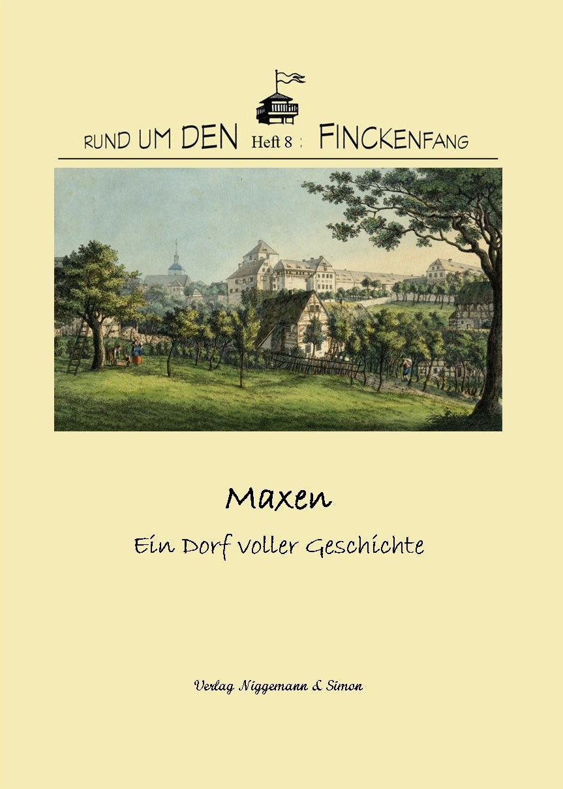
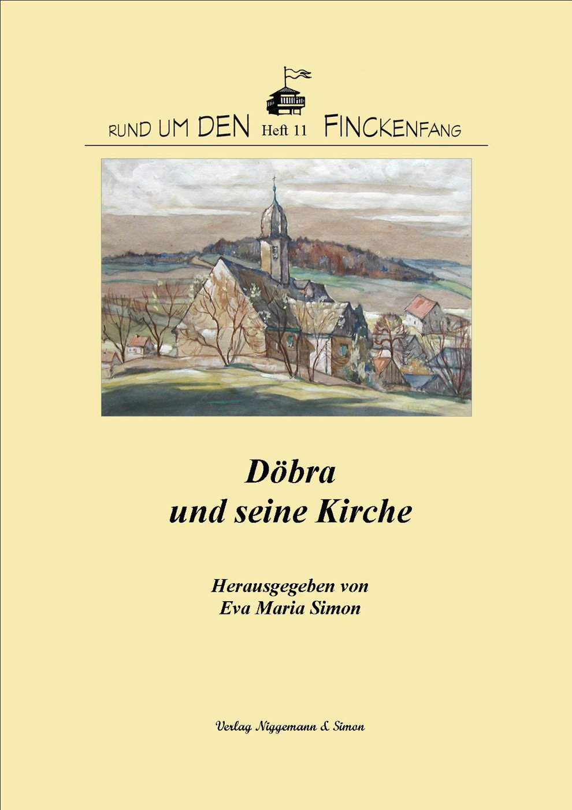
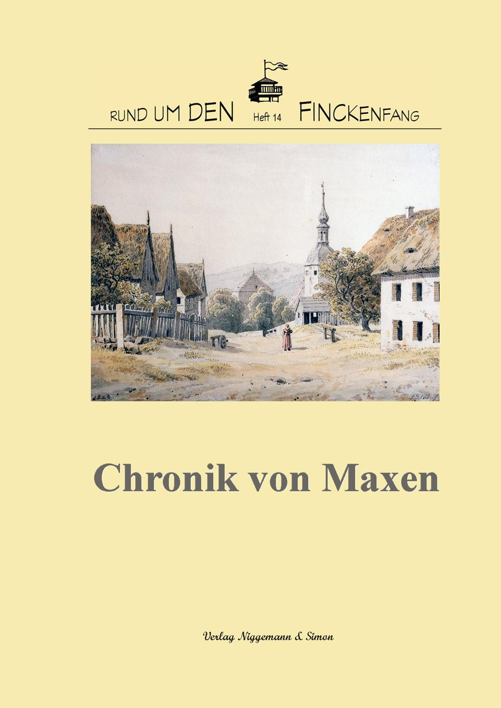

Reihe „Rund um den Finckenfang“
Die Hefte unserer Reihe stellen die Geschichte und Kultur von Maxen und seiner Umgebung vor. Wählen Sie einen Umschlag, um die Angaben zur jeweiligen Veröffentlichung zu lesen.

Heft 1: Die Schlacht bei Maxen am 20. November 1759
Zurzeit nicht lieferbar

Heft 2: Sagenhaftes Müglitztal. Alte und neue Geschichten von Zinnwald bis Heidenau
Zurzeit nicht lieferbar

Heft 3: Maxen und seine Kirche. Festschrift zum 125. Jubiläum der Erneuerung der Maxener Kirche 1878–2003

Heft 4: Raden Saleh – Ein Malerleben zwischen zwei Welten
Zurzeit nicht lieferbar

Heft 5: Der Kalk- und Marmorbergbau um Maxen. Zeugnis wirtschaftlicher und industrieller Vergangenheit
Zurzeit nicht lieferbar

Heft 6: Eine Bauernfamilie in Maxen. Genealogische Dokumentation der Höfe und Häuser der Familie Kühnel 1650–1900
Zurzeit nicht lieferbar

Heft 7: Hans Christian Andersen in Dresden und Maxen. Zeugnisse einer Dichterfreundschaft mit Friederike und Friedrich Anton Serre

Heft 8: Maxen. Ein Dorf voller Geschichte

Heft 9: Krieg und Frieden in Maxen
Zurzeit nicht lieferbar
Heft 10: Das Blaue Häusel 1848–2023

Heft 11: Döbra und seine Kirche
Heft 12: Serres und die Künstler. Texte, Bilder, Impressionen von den Maxener Gesprächen
Zurzeit nicht lieferbar

Heft 13: „Es ist bis dato ein ganz unerhörtes Exempel …“ Der Finckenfang bei Maxen im November 1759
Zurzeit nicht lieferbar

Heft 14: Chronik von Maxen

Heft 15: Denk ich an Maxen … Eine Blütenlese aus zwei Jahrhunderten
Zurzeit nicht lieferbar

Heft 16: Liebe und Leid in napoleonischer Zeit. Ein lokalhistorischer Roman aus dem Dresdner Raum